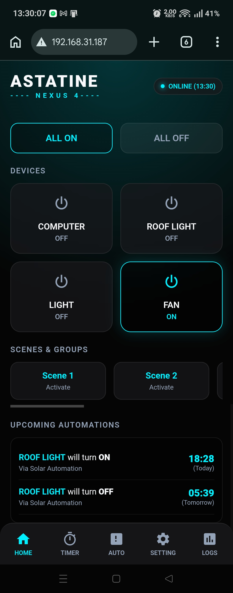

Main Control Hub
The primary home screen designed to give an instant overview of the entire system. It provides real-time control and displays active automations seamlessly.
-
4-CHANNEL CONTROL
Instantly toggle up to four separate devices or relays directly from the dashboard with zero latency. -
AUTOMATION VISIBILITY
Quickly see exactly what automation (like timers or solar schedules) is currently active for each specific device. -
RESPONSIVE ARCHITECTURE
Built with asynchronous APIs, allowing the UI state to update instantly without ever requiring a page reload.

Solar Automation
A highly advanced automation feature that calculates local sunrise and sunset times directly on the edge device, requiring no active internet connection.
-
OFFLINE CALCULATION
Uses an onboard DS1307 RTC and complex solar math to autonomously trigger relays based on the sun's position. -
CUSTOM OFFSETS
Allows users to add a specific time offset (e.g., turn on lights exactly 30 minutes *before* sunset) for perfect ambient control. -
SENSOR FUSION
Hardware integrates seamlessly with I2C BMP280 sensors to cross-reference temperature and pressure data alongside the solar schedule.

Precision Scheduling
A robust daily routing system allowing users to set absolute clock times for devices to turn on and off.
-
RTC INTEGRATION
Schedules are strictly tied to the hardware clock, ensuring they execute flawlessly even if the Wi-Fi network goes down. -
MULTI-CHANNEL ROUTING
Each of the 4 relay channels can have its own independent schedule programmed directly through the glassmorphic interface. -
POWER-LOSS RECOVERY
Variables are safely written to LittleFS/EEPROM, allowing the system to instantly resume schedules after grid power cuts.

Smart Countdown & Sleep
Intuitive duration-based timers to automate short-term tasks and ensure energy efficiency.
-
COUNTDOWN TIMER
Set a specific duration (in hours and minutes). The system counts down and toggles the relay when the time expires. -
SLEEP FUNCTIONALITY
Ensures heavy-draw devices do not run indefinitely by automatically cutting power after the specified duration is reached. -
NON-BLOCKING LOGIC
Engineered with custom millis() tracking, allowing countdowns to process in the background without freezing the system loop.

Deep System Diagnostics
A built-in terminal that allows field technicians and users to view the raw state of the microcontroller directly from their phone browser.
-
ACTIVITY FEED
A rolling log of every action taken by the system, tracking user inputs, automated triggers, and sensor errors. -
HARDWARE HEALTH
Displays live Heap memory, I2C bus status, CPU frequency, and Wi-Fi RSSI strength to aid in rapid fault isolation. -
OTA READY
Secure boot capabilities allowing over-the-air firmware flashes directly through the local network without physical access.

System Configuration
The administrative backend of the Nexus 4 dashboard, providing deep customization and secure maintenance options.
-
UI CUSTOMIZATION
Allows users to rename individual channels and adjust the overall dashboard theme color to fit their environment. -
FACTORY RESET
Secure commands to wipe EEPROM configurations and reboot the device safely back to factory parameters. -
AP FALLBACK MODE
Automatically transitions the device into its own Access Point (AP) if the local router drops, ensuring you never lose control.